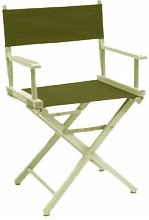

|  | Introducing Open Producer The producer is the great enabler of the motion
picture process, the person who makes it all possible.
|
| Open
Producer Overview Prerequisites Download Install Documentation Related Links OpenGL OpenSceneGraph Andes Computer Engineering |
Overview Open Producer (or simply Producer) is a cross-platform, C++ library for managing OpenGL rendering contexts in a windowing system independent manner. Producer provides a simple, yet powerfully scalable approach for real-time 3D applications wishing to run within a single window to large, multidisplay systems. Producer is highly portable and has been tested on Linux, Windows, Mac OSX, Solaris and IRIX. Producer works on all Unix based OS's (including Mac OSX) through the X11 Windowing system, and through the native win32 on Windows. Producer is written with productivity, performance and scalability in mind by adhering to industry standard and employing advanced software engineering practices. Software developers wishing to produce 3D rendering software that can display on a desktop, and move to a large system or clustered system of displays by simply changing a configuration file, can depend on Open Producer to handle all the complexity for them. Open Producer is distributed under the terms of the GNU LIBRARY GENERAL PUBLIC LICENSE (LGPL) as published by the Free Software Foundation. |